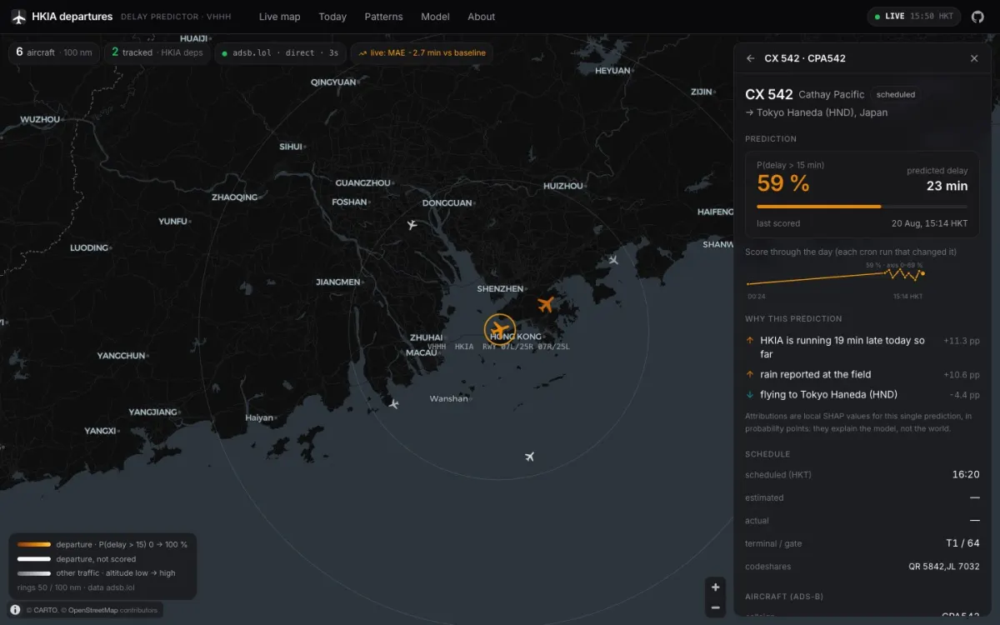

Draft. Highlighted [TBC] notes are for Darren to fill in or cut before this goes live.
The week my model tied a lookup table
I built an XGBoost model for flight delays, graded it in public, and found it only half beat a table of historical averages.

The HKIA Flight Delay Predictor takes a departure from Hong Kong airport and gives it a probability of leaving more than 15 minutes late. Behind that number is XGBoost trained on 38 features: rolling delay statistics for the airline and the airport, the weather at the field at the time, typhoon signals.
The model is not the interesting part. The interesting part is the comparison I built next to it: a baseline that ignores almost everything and just looks up how late that airline usually is at that hour. If a model with 38 features cannot beat a lookup table, it is a very expensive lookup table.
Grading it where anyone can see
Every thirty minutes a GitHub Actions job re-scores every flight that has not left yet. When a flight finally departs, the prediction it carried is compared with what happened, and the result goes on a public report card. I did not want a number I could quietly choose the best week for, so the page shows a rolling seven-day window and a confidence interval on every margin.
In the first week of live scoring the report card was not flattering. On the held-out test set the model won clearly. Live, the gap in AUC, which measures how well it ranks flights from least to most likely to be late, came out at +0.018 with a 95% interval of −0.012 to +0.048. That interval includes zero, so the honest reading was a tie. On some days the lookup table ranked flights better than the model did.
What did separate from noise was the error in minutes: the model was about 2.6 minutes closer on average, with an interval that stayed well clear of zero.
What I did with that
I left it on the page. The report prints a column headed “separable from noise?”, and a margin whose interval straddles zero is marked as reported, not claimed. The window I checked most recently, 28 October to 5 November, has the same shape: Brier score, log loss and minutes-error clearly better than the baseline, AUC +0.015 with an interval that still crosses zero.
A lookup table is a stronger opponent than it sounds, because airlines and hours explain a lot of delay on their own. Where the model clearly earns its keep is in the probabilities and the minutes, not in the ranking. [TBC: Darren: the moment you first saw the tie on the report card, and what you did next. Even two sentences of what it felt like would make this yours.]
The board at the top of this site reads the same data. Every percentage on it is one of those graded predictions, and you can check how the model has been doing before you believe any of them.